Know what’s next
Bring meals, medications, movement, and reminders into your daily routine.
DRAGON’S RHYTHM
Meals, movement, meds, and the habits that keep you going. Bring them together in one app, follow workouts that progress with you, and find patterns in your own history. Help shape Dragon’s Rhythm by joining the first Android beta.
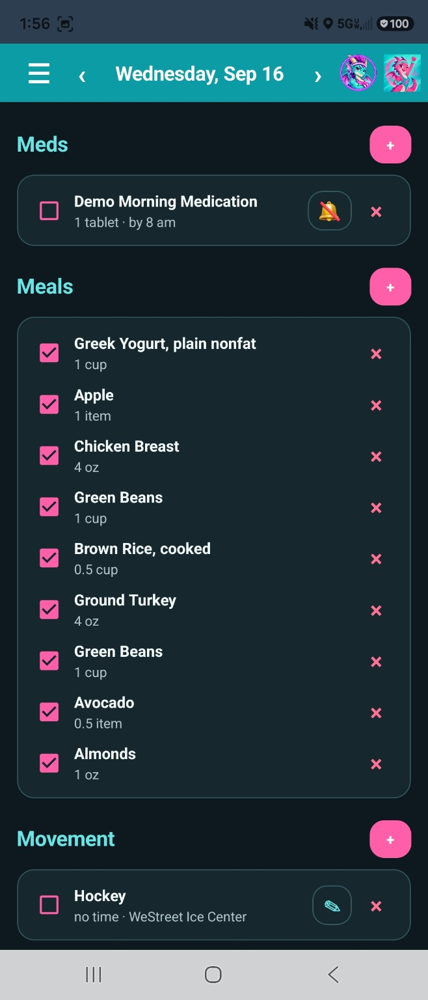
Across days—not just isolated entries.
Supportive, direct, or somewhere between.
MAKE YOUR ROUTINE EASIER TO KEEP
See what’s planned, record what happened, and pick up where you left off. Dragon’s Rhythm connects the everyday details so you can spend less time piecing them together.
Bring meals, medications, movement, and reminders into your daily routine.
Follow progressive programs with exercise instructions close at hand.
Explore your progress with Insights and a coaching voice that fits you.
REAL LIFE FIRST
Plans matter, but real life wins. Dragon’s Rhythm keeps reusable meals, activities, medications, workouts, and weekly planning close at hand while still making it easy to add what really happened without rewriting the plan.
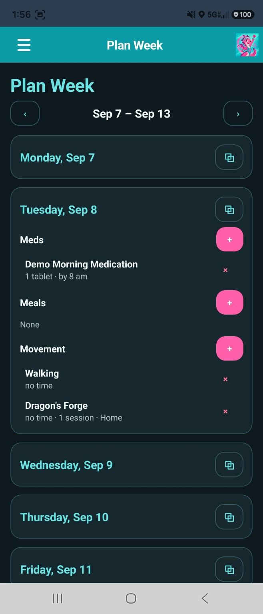
BUILT AROUND THE WHOLE PICTURE
Dragon’s Rhythm brings planning, tracking, training, coaching, and longer-term analysis into one connected system.
Look for repeated timing, trends, contrasts, and relationships across the data you already record.
Use the same underlying evidence with a coaching voice that fits you—from supportive to very direct.
Run multi-week training plans that can change sets, reps, difficulty, and instructions as the program progresses.
Keep instructions and muscle-reference views right where the workout happens instead of hunting through another app.
Keep measurements, photos, workouts, habits, and changes over time connected instead of reducing progress to one number.
Your day-to-day records are built around an on-device design with backup and restore support.
DRAGON’S INSIGHTS
Dragon’s Insights looks across your recorded history, surfaces the signals that keep repeating, and lets you inspect the evidence behind a finding instead of treating every fluctuation like a new story.
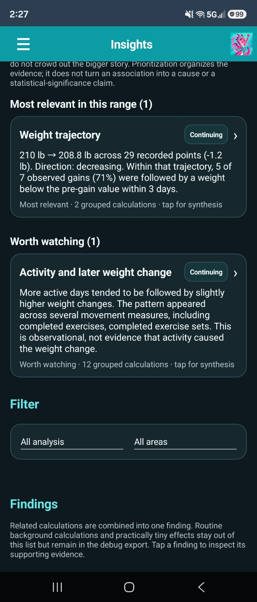
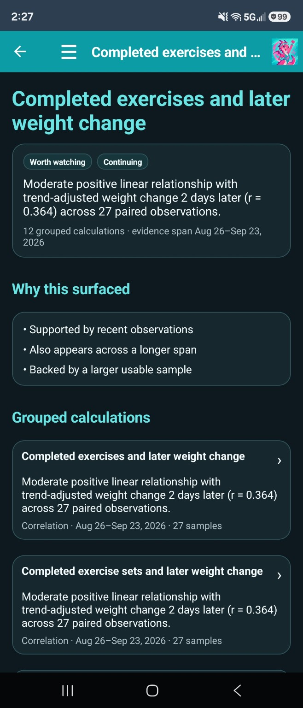
COACHING WITHOUT THE COOKIE CUTTER
Want encouragement? A calm perspective? Someone who gets straight to the point? Choose the coach whose style works for you. The findings stay the same; the delivery is yours to choose.
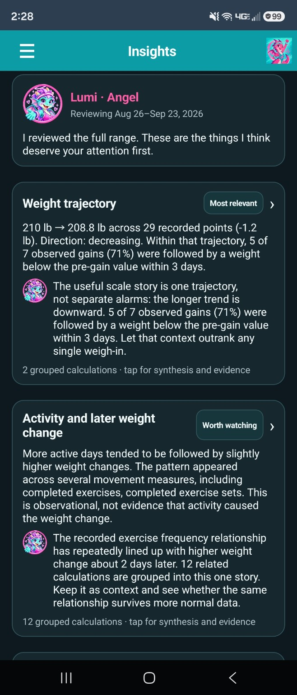
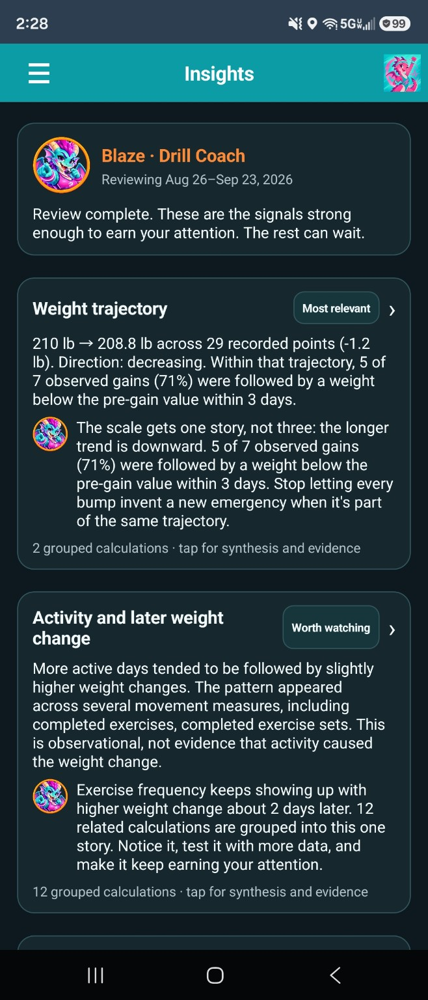
Same recorded range. Same underlying findings. Two very different voices.
YOUTH MODE
Youth Mode isn’t the adult experience with smaller numbers. It shifts the emphasis toward age-appropriate habits, movement, recovery, and a simpler daily experience.
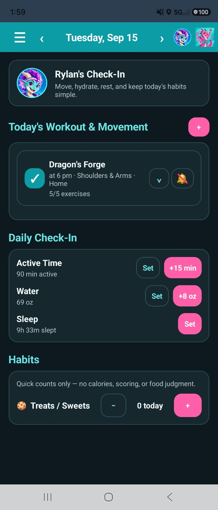
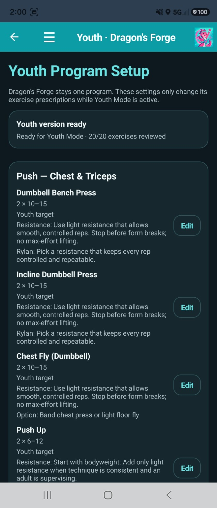
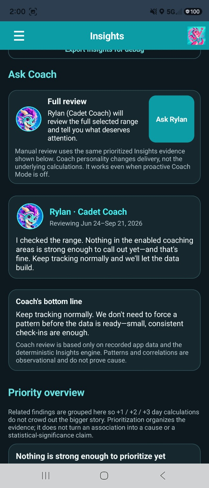
TRAINING THAT CAN ACTUALLY PROGRESS
Dragon’s Rhythm keeps the structure with the program instead of making you rewrite the workout every week. Programs bring their schedule, sessions, reminders, and history together, with sets, reps, and instructions that can change as you progress.
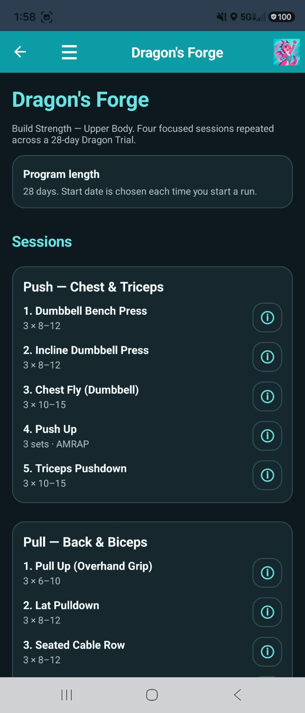
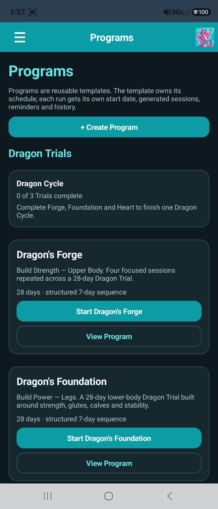
WHY I BUILT IT
I wanted my meals, workouts, meds, and progress in one place, with enough context to understand what was working for me. So I started building it.
I use Dragon’s Rhythm myself. Now I’m looking for people with different routines, different phones, and honest feedback. Tell me what helps, what’s confusing, and what breaks. That’s how we make it better.
Lisa · Developer, DragonBuilds
HELP SHAPE WHAT COMES NEXT
Try it in everyday life. Find the rough edges. Help make Dragon’s Rhythm more useful. Sign up now and watch for installation instructions when the first test is ready.
Android via Google Play. Signup requests an invitation; it does not install the app or guarantee immediate access.
Screenshots show a development version. Features and appearance may change during beta. Dragon’s Rhythm supports personal tracking and general wellness; it does not provide medical diagnosis or treatment.